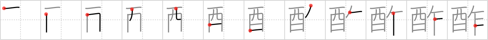

酢
← →
vinegar

Reading:
On-Yomi: サク — Kun-Yomi: す
Heisig story:
Whiskey bottle . . . saw.
Koohii stories:
1) [Raichu] 18-4-2007(284): Drinking alcohol that's turned to vinegar feels like a saw going down your throat.
2) [szreter] 24-6-2008(85): I spent ages sawing that whiskey bottle open, but when I got in, it had all turned to vinegar!
3) [CountPacula] 24-5-2009(12): Yesterday's alcohol turns into today's vinegar. (Yesterday = day + saw.).
4) [radical_tyro] 1-7-2007(12): To determine wether the bottle contains vinegar or whiskey, you have to saw it open.
5) [jabberwockychortles] 26-9-2009(8): When the whiskey turns to vinegar, the taste is sharp like a saw.